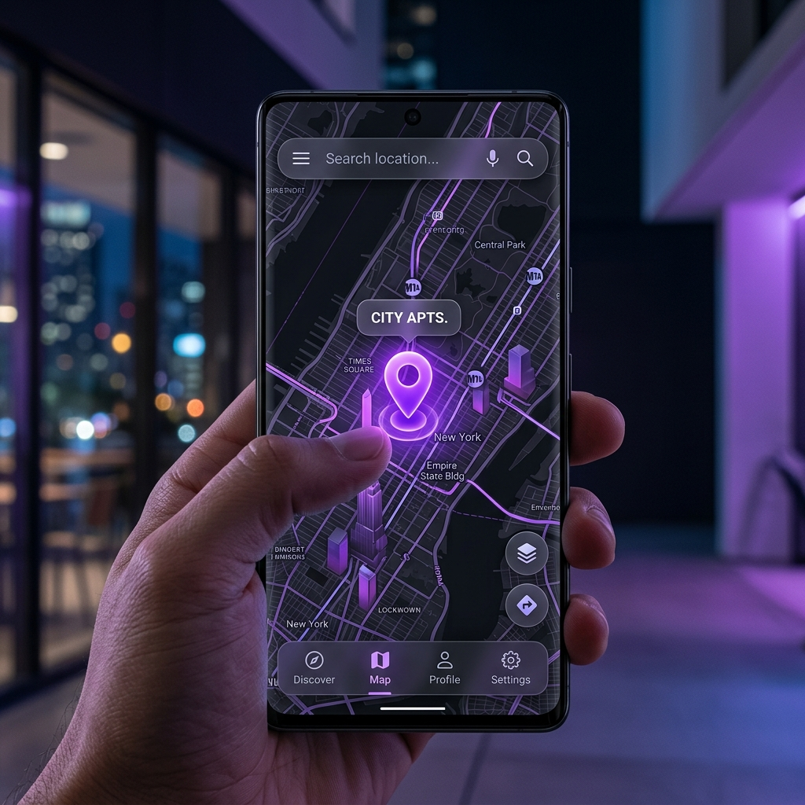

PhantomPin lets you set a virtual GPS location instantly. Built for developers testing location-aware apps and privacy-conscious users.

Designed using official Android Mock Location APIs.
Search any city, street, or landmark—or just tap the map to drop a pin instantly.
One-tap Start and Stop. Your virtual location activates immediately across all apps.
No account, no login. Your real GPS position is never read, stored, or transmitted.
Takes about 2 minutes. No root required.
Go to Settings → About Phone and tap "Build Number" 7 times.
Open Developer Options, tap "Select mock location app", and choose PhantomPin.
Open PhantomPin, drop a pin anywhere on the world map, and tap Start.